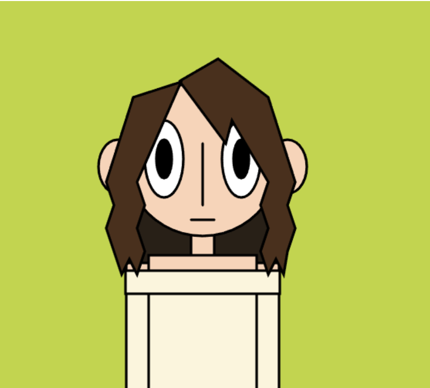
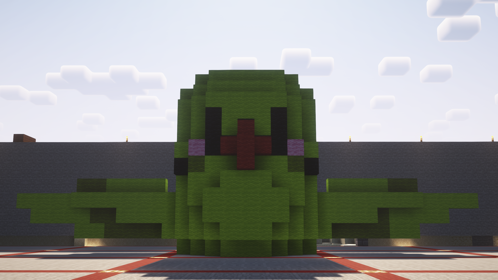
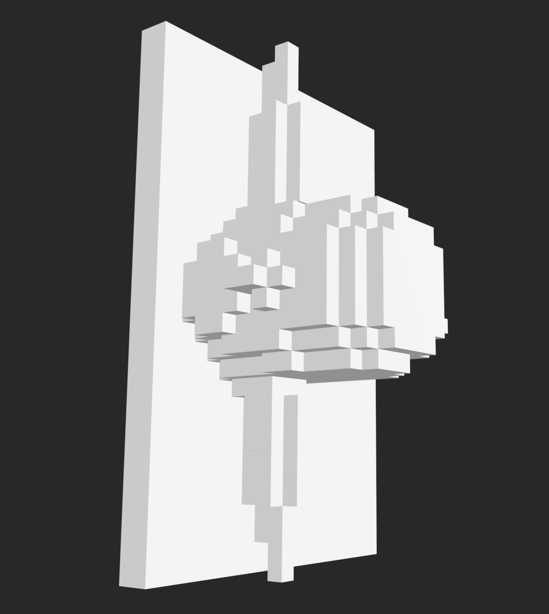
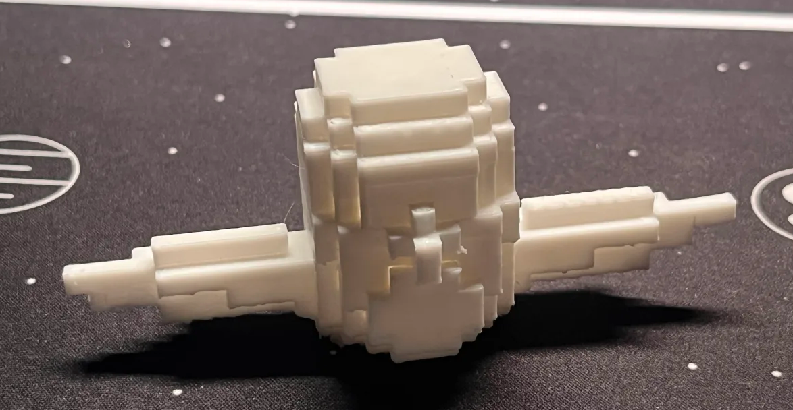
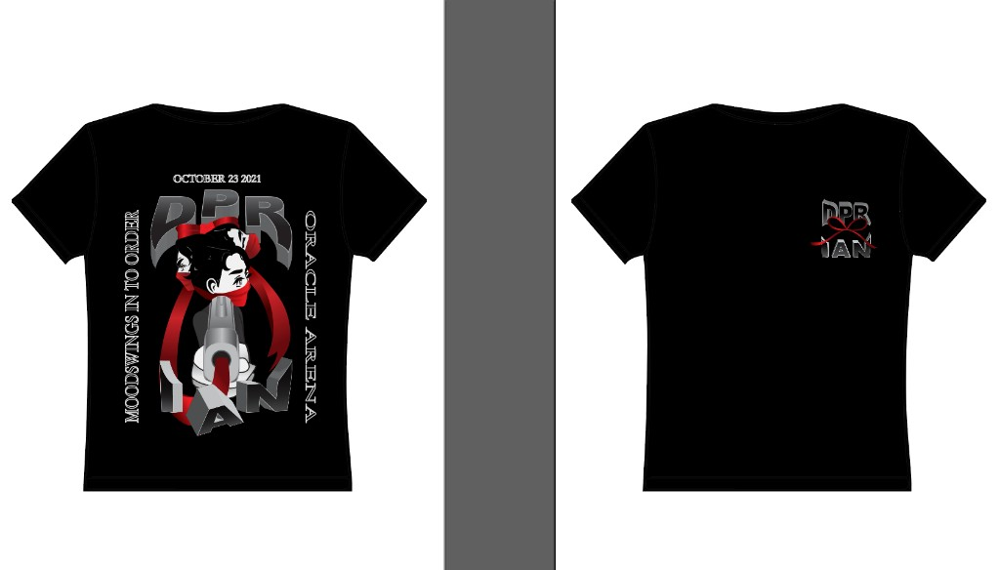
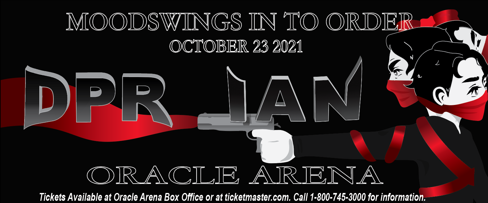
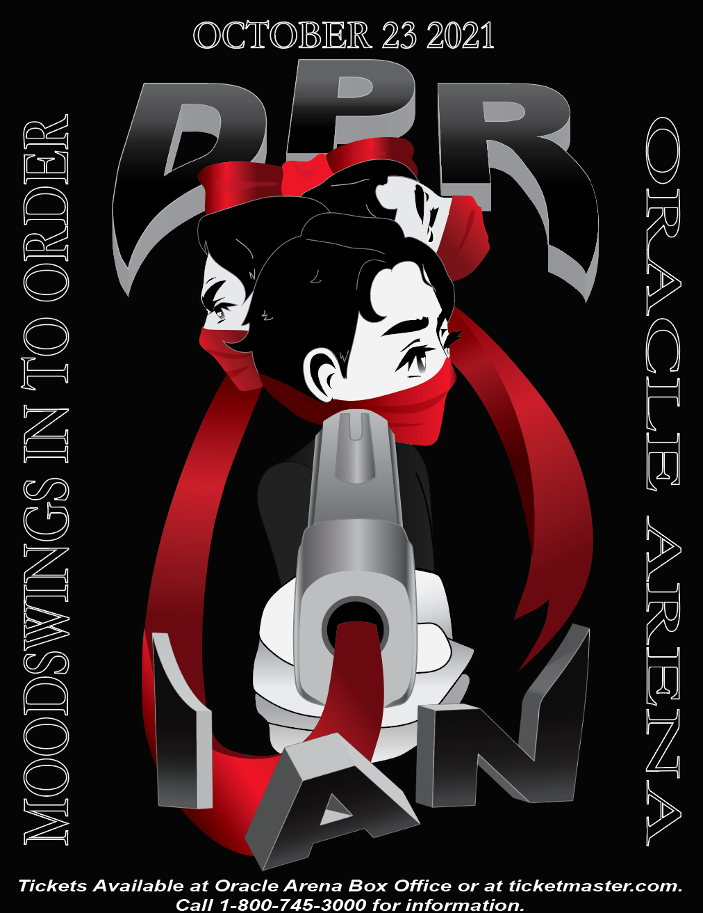
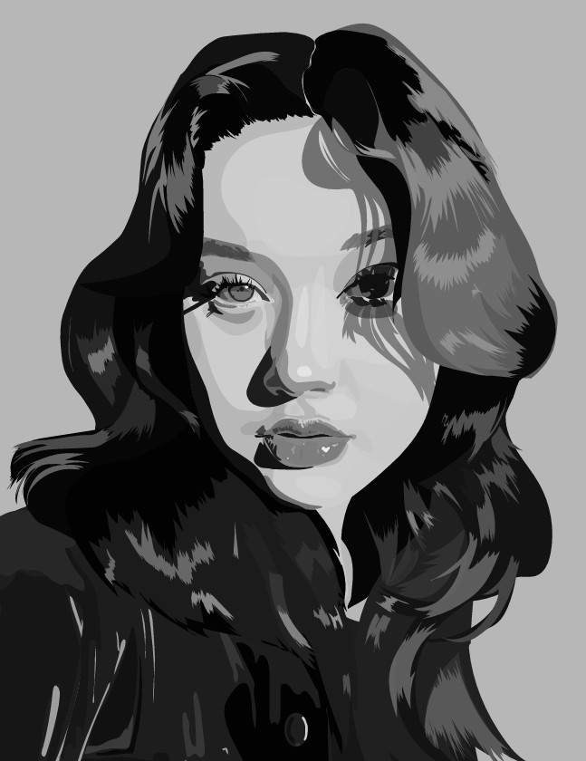
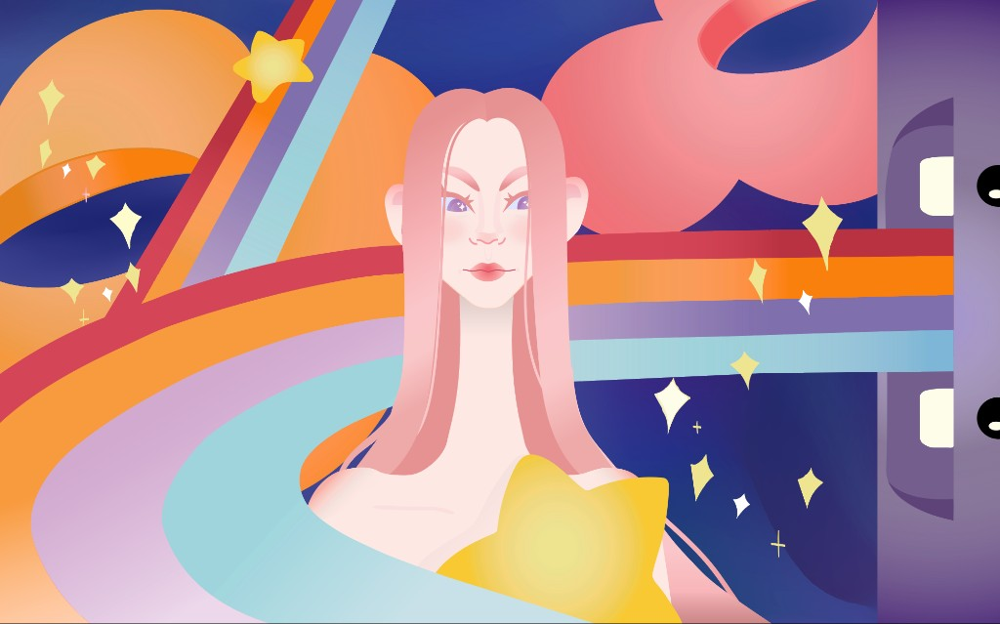

Beatriz Ayon Tapia

Artist Statement:
I am Beatriz Ayon Tapia, a first-generation Mexican American college student at San Jose State. I have always used art as a means of self expression -- a way to process, communicate, and connect to the world around me. Part of my practice is exploring different creative mediums and programs. Here at San Jose State University, the Digital Media Arts (DMA) program has enabled me to collaborate with various media and computer programs to create visual works without limits.
Contact me: beatriz.ayon04@gmail.com



Here are video projects made for the course Art 75 using Adobe Premiere Pro and other editing softwares. This course allowed me to experiment with different editing techniques and storytelling elements.





Trenzas
Through these photographs I explored Mexican Indigenous identity through the practice of capturing traditional braids.
For these stop motion works I worked through storyboarding, sculpting and filming my projects.